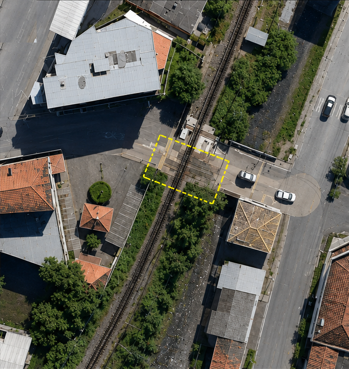
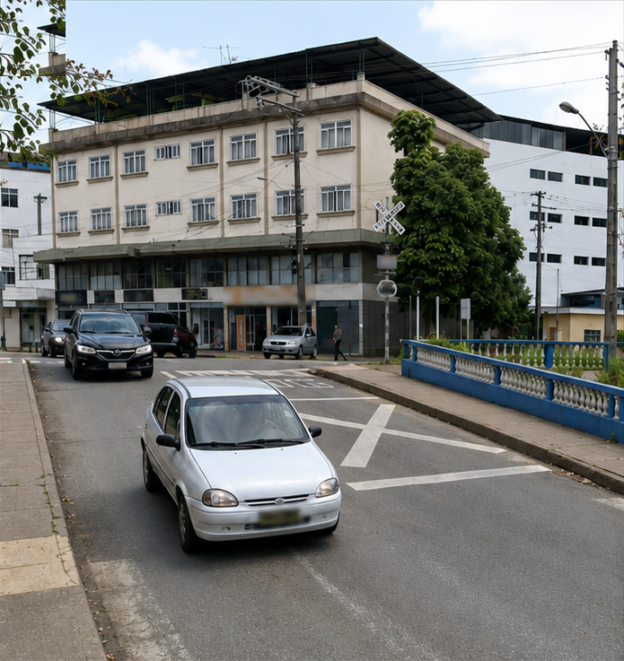
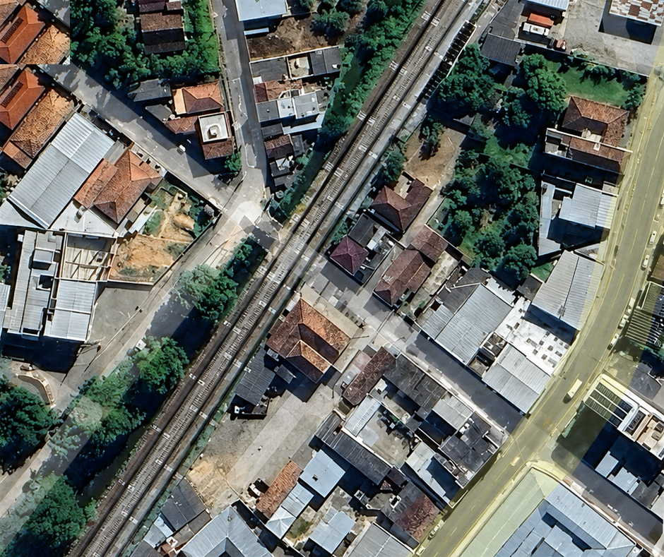
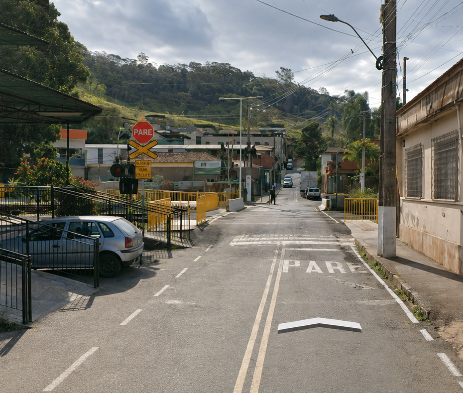
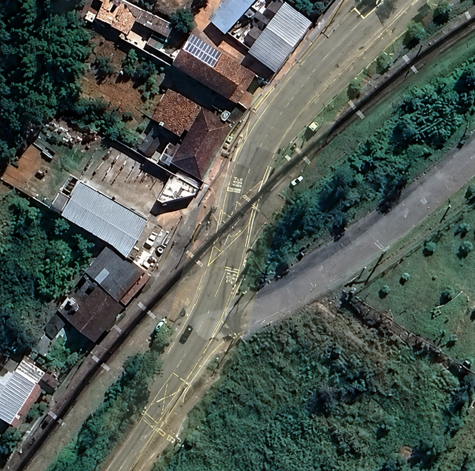
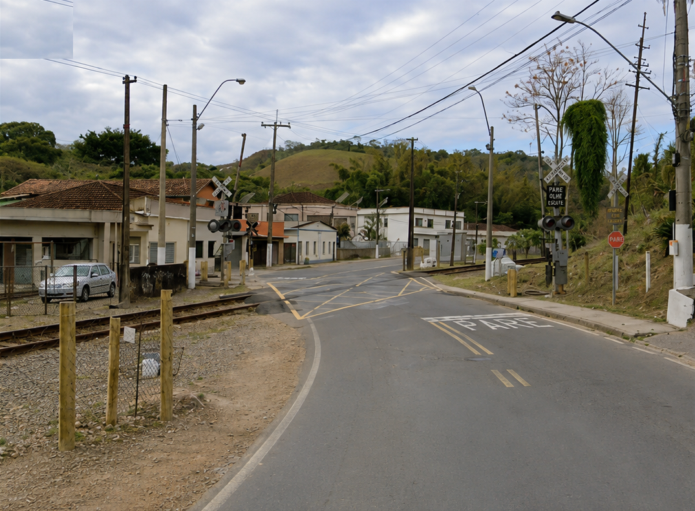
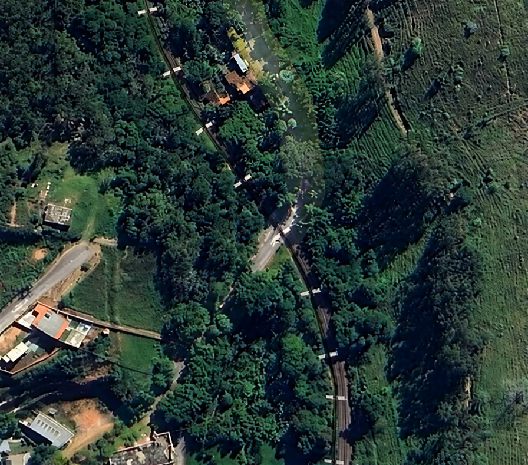
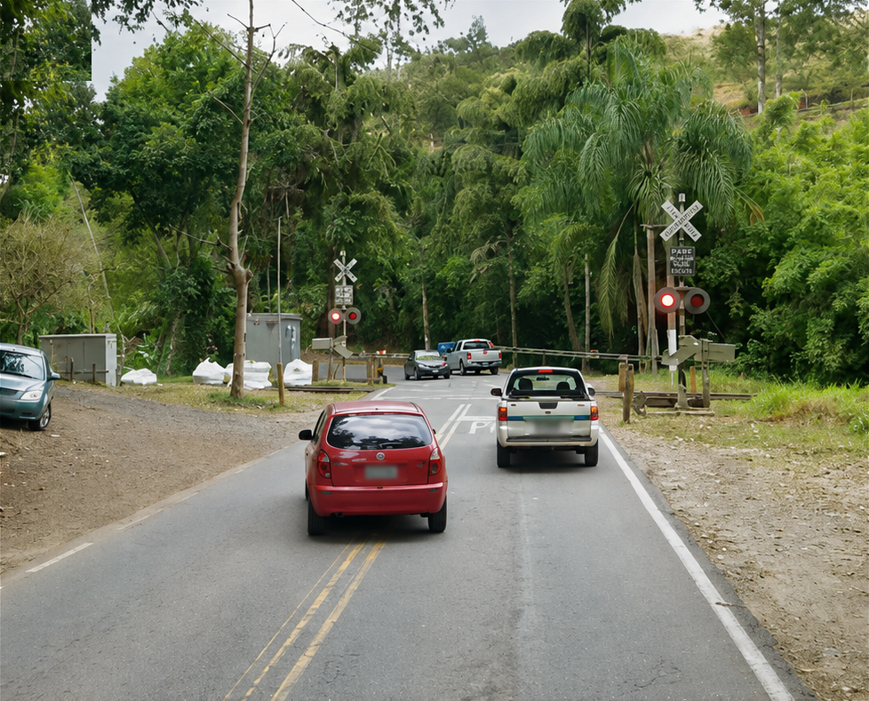
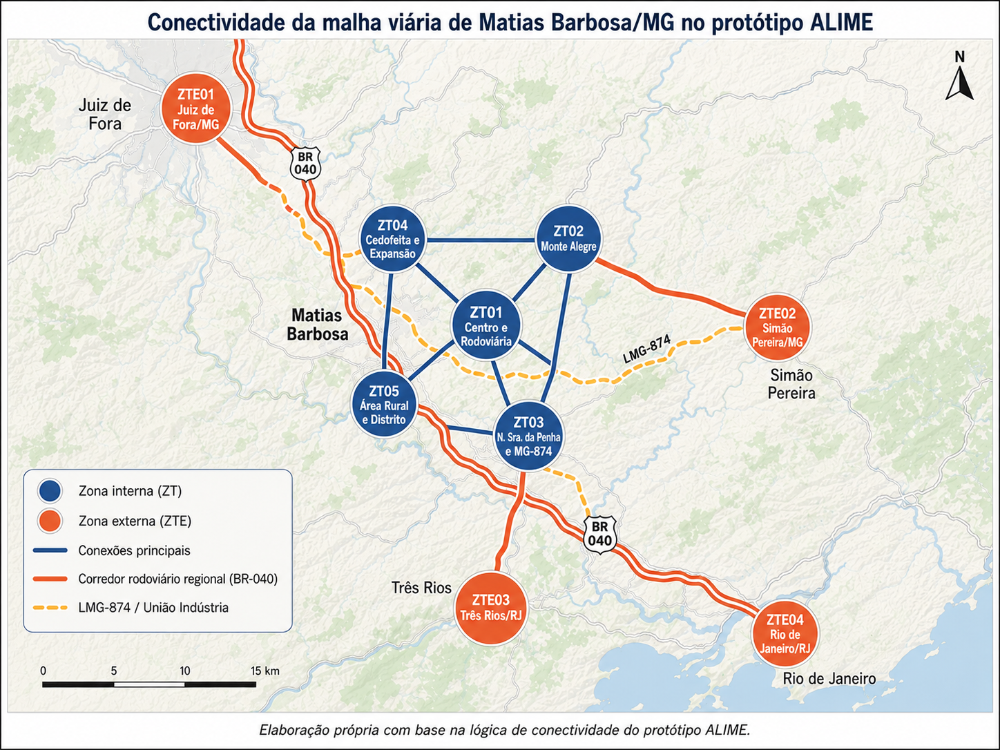
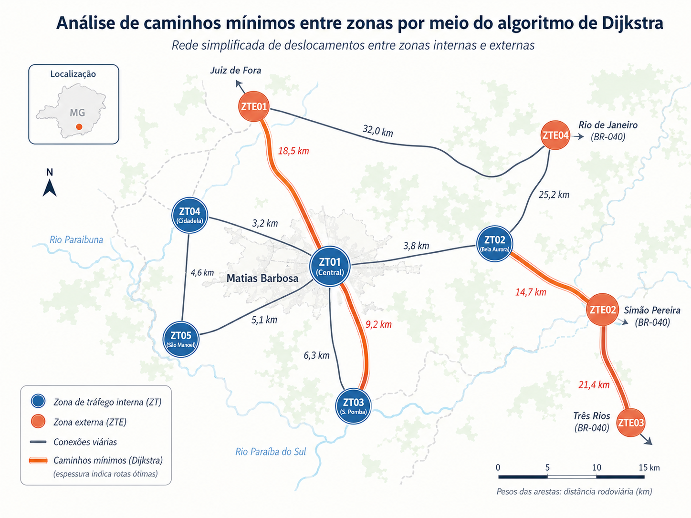

PN01ZT01–ZT03

Doutorado em Transportes · Planejamento de Transportes · IME
para diagnóstico de conflitos rodoferroviários
em municípios de pequeno porte
O território · Wagner
Cidade pequena na Zona da Mata mineira, no eixo Rio–Juiz de Fora. Três eixos estruturantes cruzam a malha urbana:
O conflito · Wagner
Onde a ferrovia cruza o sistema viário no mesmo nível, o trem bloqueia o trânsito — retenção, fila e aumento de percurso, várias vezes ao dia.








A base de dados · Wagner
A premissa do ALIME é usar só fontes oficiais e abertas — por isso a mesma análise se repete em qualquer município de pequeno porte, sem pesquisa de campo cara.
No Censo 2022 o IBGE dividiu Matias Barbosa em 38 setores censitários, aqui agrupados em zonas respeitando as barreiras físicas — ferrovia, BR-040 e LMG-874.
A demanda · Wagner
O ALIME converte produção e atração por zona em uma matriz O-D balanceada, distribuindo 9.176 viagens/dia com base em impedância espacial e equilíbrio entre totais.
população e domicílios → viagens geradas por zona
empregos, escolas e comércio → viagens atraídas
distribui as viagens · atrito espacial β = 1,50
ajuste das atrações para igualar produções
O custo do atraso · Wagner
Ao monetizar o tempo perdido, a intervenção deixa de ser abstrata e passa a ser planejável.
A ferramenta · Luiz
Um simulador web de apoio à decisão preliminar para municípios de pequeno porte (até ~20 mil hab) — onde falta dado e verba para um estudo completo.

O método · Luiz
vetores de produção e atração por zona
matriz O-D por modelo gravitacional
ativo · individual · coletivo
caminho mínimo · all-or-nothing
Com as passagens em nível ativas, a rede empurra a escolha modal:
A rede · Luiz

Cada passagem em nível vira peso a mais na aresta. O Dijkstra recalcula o caminho mínimo — e o atraso aparece.
Os cenários · Luiz
A geração total não muda (9.176 viagens/dia) — o que muda é para onde e como as viagens acontecem.
Com as PN, a cidade se fecha: mais viagens presas dentro da própria zona, menos integração entre zonas e com a região.
A decisão · Luiz
O ganho máximo vem de tratar as interferências em conjunto — não isoladas.
Diferença = recorte: o simulador conta o atraso do sistema inteiro (72 pares) e testa vários cenários; a conta manual contou só 1.500 viagens.